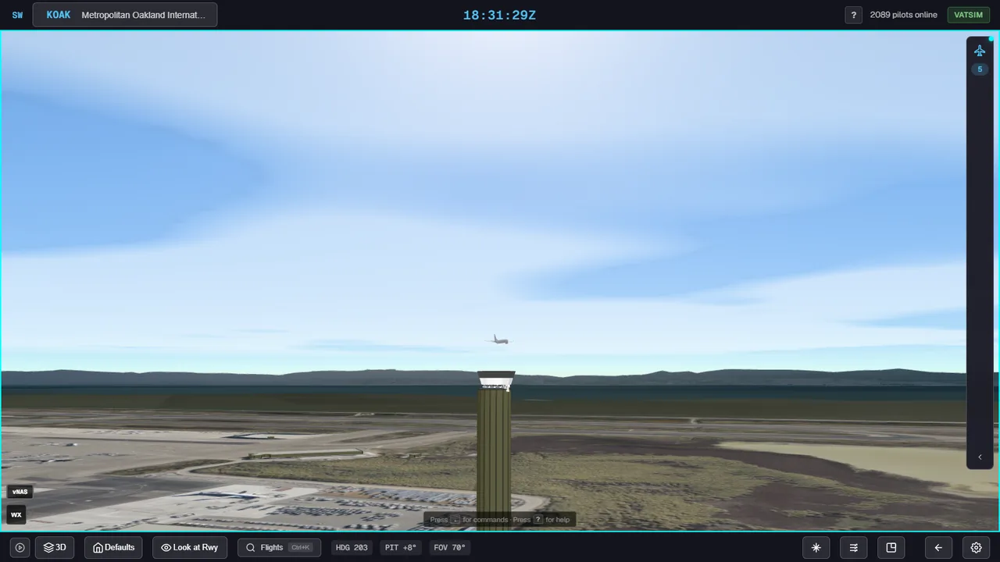
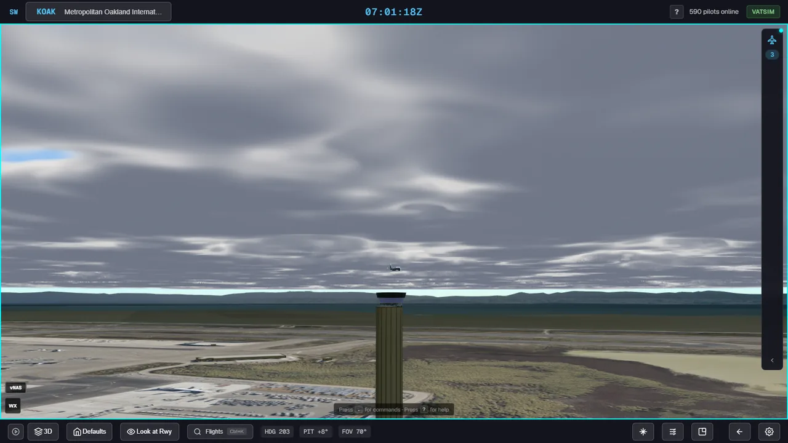
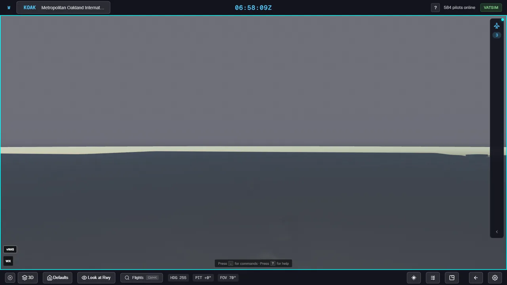
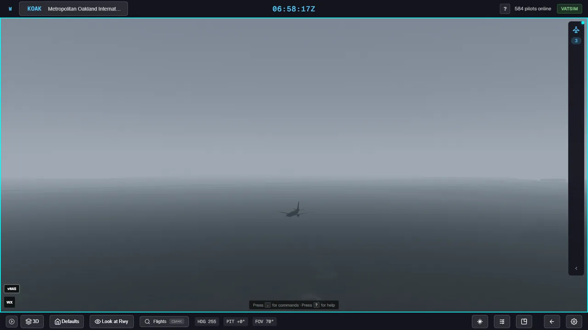
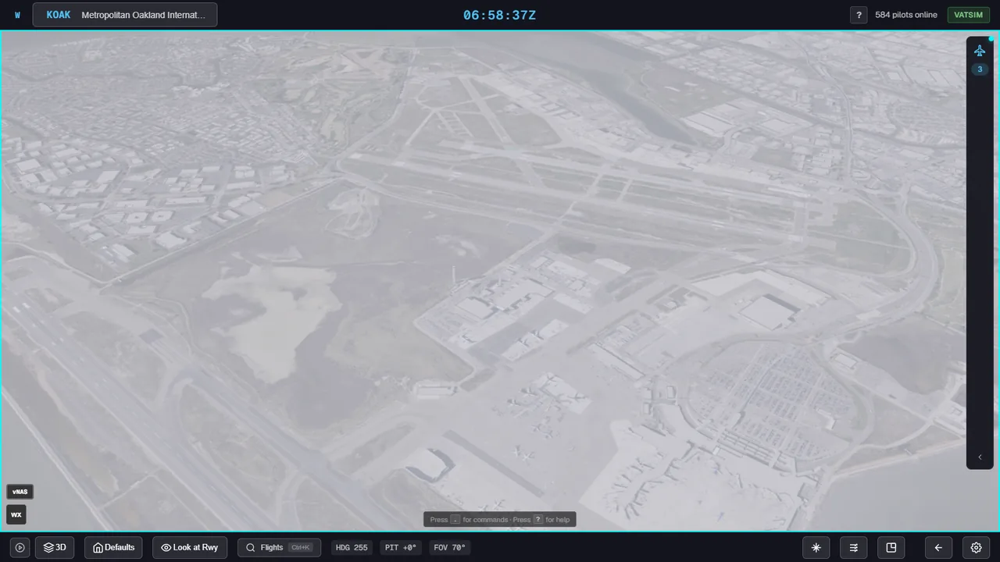
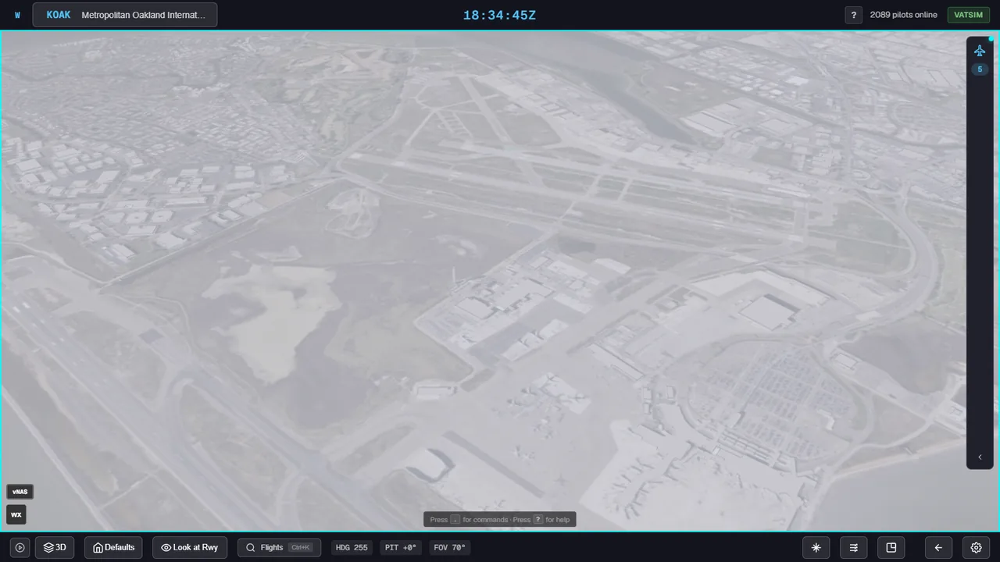
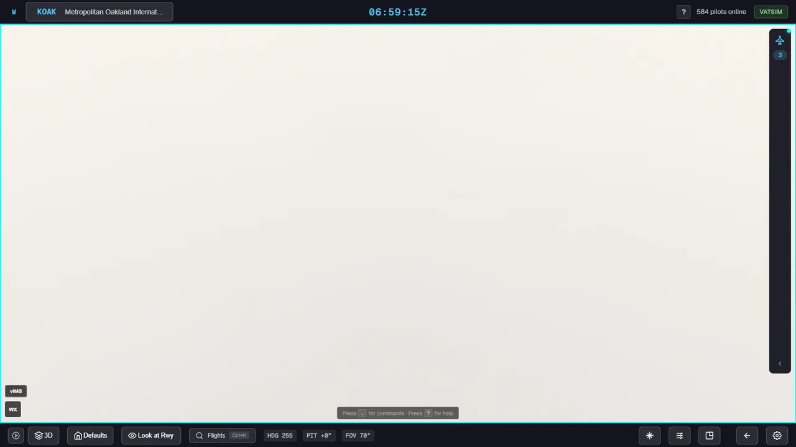
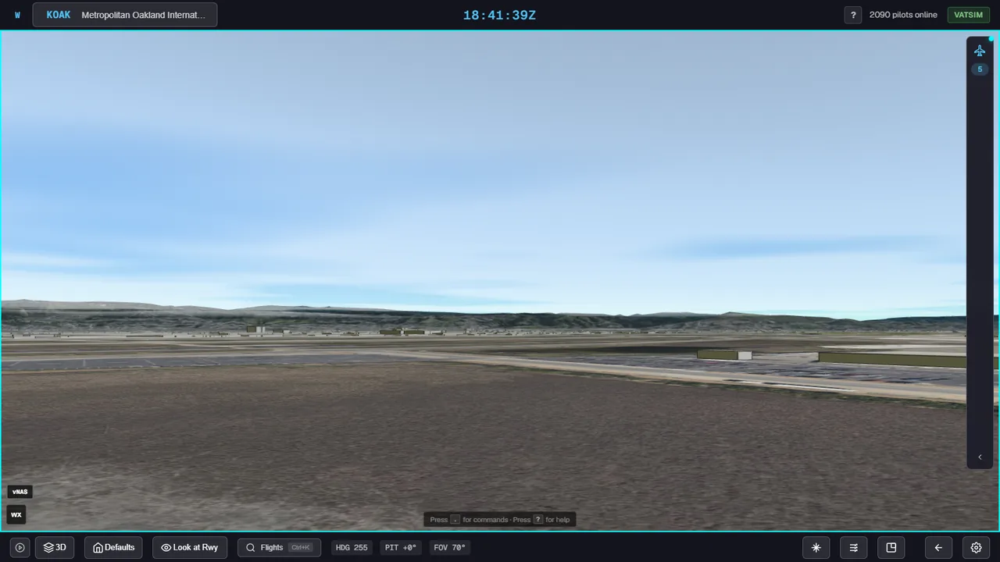
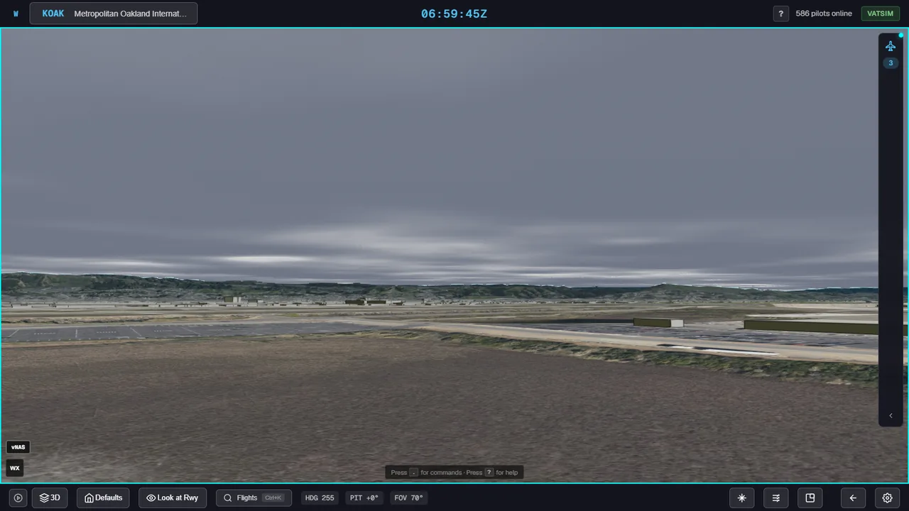

<title>Cesium Weather Spike</title>
<meta name="claude:viewport-fit-sides" content="cover">
<link rel="preconnect" href="https://fonts.googleapis.com">
<link rel="preconnect" href="https://fonts.gstatic.com" crossorigin>
<link rel="stylesheet" href="https://fonts.googleapis.com/css2?family=Barlow+Semi+Condensed:wght@500;600;700&family=Source+Sans+3:wght@400;600&family=JetBrains+Mono:wght@400;600&display=swap">
<style>
/* Layout: one reading column; each test case is a full-width before/after slider with its verdict beside the caption. */
:root {
  --bg: #f2f5f6;
  --panel: #ffffff;
  --ink: #142029;
  --muted: #566672;
  --line: #d6dee3;
  --accent: #0a7f9a;
  --ok: #217a4b;
  --ok-bg: #e2f2e9;
  --warn: #8f5d06;
  --warn-bg: #fbf0d9;
  --bad: #a3312a;
  --bad-bg: #f8e3e1;
  --chip-bg: #e7eef1;
  --font-display: "Barlow Semi Condensed", "Arial Narrow", "Helvetica Neue", Arial, sans-serif;
  --font-body: "Source Sans 3", "Segoe UI", Helvetica, Arial, sans-serif;
  --font-mono: "JetBrains Mono", ui-monospace, "Cascadia Mono", Consolas, monospace;
}
@media (prefers-color-scheme: dark) {
  :root:not([data-theme="light"]) {
    --bg: #0e151a; --panel: #152029; --ink: #e2e9ee; --muted: #93a4b1; --line: #263540;
    --accent: #3cc3e2; --ok: #6fd39c; --ok-bg: #16352a; --warn: #f0c060; --warn-bg: #3a2e12;
    --bad: #f08a80; --bad-bg: #3d1d1b; --chip-bg: #1d2b35; color-scheme: dark;
  }
}
:root[data-theme="dark"] {
  --bg: #0e151a; --panel: #152029; --ink: #e2e9ee; --muted: #93a4b1; --line: #263540;
  --accent: #3cc3e2; --ok: #6fd39c; --ok-bg: #16352a; --warn: #f0c060; --warn-bg: #3a2e12;
  --bad: #f08a80; --bad-bg: #3d1d1b; --chip-bg: #1d2b35; color-scheme: dark;
}
body {
  background: var(--bg); color: var(--ink); font: 400 16px/1.55 var(--font-body);
  padding-left: max(16px, env(safe-area-inset-left, 0px)); padding-right: max(16px, env(safe-area-inset-right, 0px));
  padding-block: 32px 64px;
}
.wrap { max-width: 980px; margin: 0 auto; display: grid; gap: 40px; }
h1, h2, h3 { font-family: var(--font-display); text-wrap: balance; margin: 0; line-height: 1.15; }
h1 { font-size: clamp(30px, 5vw, 44px); font-weight: 700; letter-spacing: 0.01em; }
h2 { font-size: 26px; font-weight: 600; }
h3 { font-size: 20px; font-weight: 600; }
p { margin: 0; max-width: 68ch; }
a { color: var(--accent); }
code, .mono { font-family: var(--font-mono); font-size: 0.86em; }
.eyebrow { font: 600 13px/1 var(--font-mono); letter-spacing: 0.08em; text-transform: uppercase; color: var(--muted); }
header { display: grid; gap: 14px; }
.lede { font-size: 18px; }
.chips { display: flex; flex-wrap: wrap; gap: 8px; }
.chip { display: inline-flex; align-items: center; gap: 6px; padding: 4px 10px; border-radius: 999px; font: 600 13px/1.3 var(--font-body); background: var(--chip-bg); color: var(--ink); }
.chip.ok { background: var(--ok-bg); color: var(--ok); }
.chip.warn { background: var(--warn-bg); color: var(--warn); }
.chip.bad { background: var(--bad-bg); color: var(--bad); }
.glance { display: grid; grid-template-columns: repeat(auto-fit, minmax(200px, 1fr)); gap: 1px; background: var(--line); border: 1px solid var(--line); border-radius: 10px; overflow: hidden; }
.glance div { background: var(--panel); padding: 14px 16px; display: grid; gap: 4px; min-width: 0; }
.glance .k { font: 600 12px/1.2 var(--font-mono); letter-spacing: 0.06em; text-transform: uppercase; color: var(--muted); }
.glance .v { font: 600 20px/1.2 var(--font-display); }
.glance .n { font-size: 14px; color: var(--muted); }
section { display: grid; gap: 18px; }
.case { display: grid; gap: 12px; }
.case-head { display: flex; flex-wrap: wrap; align-items: baseline; justify-content: space-between; gap: 8px 16px; }
.wx { font: 400 14px/1.4 var(--font-mono); color: var(--muted); }
.compare { position: relative; width: 100%; max-width: 100%; aspect-ratio: 16 / 9; border-radius: 8px; overflow: hidden; background: #000; border: 1px solid var(--line); }
.compare img { position: absolute; inset: 0; width: 100%; height: 100%; object-fit: cover; display: block; max-width: 100%; }
.compare .top { clip-path: inset(0 0 0 var(--split, 50%)); }
.compare .divider { position: absolute; top: 0; bottom: 0; left: var(--split, 50%); width: 2px; background: #fff; box-shadow: 0 0 0 1px rgba(0,0,0,.35); pointer-events: none; }
.compare .tag { position: absolute; top: 10px; padding: 3px 8px; border-radius: 4px; font: 600 12px/1.2 var(--font-mono); letter-spacing: 0.04em; background: rgba(10,16,20,.72); color: #fff; pointer-events: none; }
.compare .tag.l { left: 10px; }
.compare .tag.r { right: 10px; }
.compare input[type="range"] { position: absolute; inset: 0; width: 100%; height: 100%; margin: 0; opacity: 0; cursor: ew-resize; }
.compare input[type="range"]:focus-visible + .divider { background: var(--accent); width: 4px; }
.caption { display: grid; gap: 6px; }
.caption p { color: var(--ink); }
.note { color: var(--muted); font-size: 15px; }
table { border-collapse: collapse; width: 100%; font-variant-numeric: tabular-nums; }
.table-wrap { overflow-x: auto; border: 1px solid var(--line); border-radius: 8px; background: var(--panel); }
th, td { text-align: left; padding: 10px 14px; border-bottom: 1px solid var(--line); vertical-align: top; }
th { font: 600 13px/1.3 var(--font-mono); letter-spacing: 0.04em; text-transform: uppercase; color: var(--muted); }
tr:last-child td { border-bottom: 0; }
td.num { font-family: var(--font-mono); white-space: nowrap; }
ul { margin: 0; padding-left: 20px; display: grid; gap: 8px; max-width: 72ch; }
details { border: 1px solid var(--line); border-radius: 8px; background: var(--panel); padding: 12px 16px; }
details summary { cursor: pointer; font: 600 17px/1.3 var(--font-display); }
details > *:not(summary) { margin-top: 12px; }
footer { color: var(--muted); font-size: 14px; display: grid; gap: 4px; }
:focus-visible { outline: 2px solid var(--accent); outline-offset: 2px; }
@media (prefers-reduced-motion: reduce) { * { transition: none !important; } }
</style>

<main class="wrap">
  <header>
    <span class="eyebrow">TC3D-135 · Spike A · KOAK</span>
    <h1>Clouds and fog drawn by Cesium</h1>
    <p class="lede">Can Cesium draw TowerCab's clouds and fog itself, so the cab, aircraft, buildings and terrain hide them where they should? Today a separate Babylon layer paints weather over everything.</p>
    <div class="chips">
      <span class="chip ok">Occlusion: correct in every case</span>
      <span class="chip warn">Look: first draft</span>
      <span class="chip warn">Cost: not cleanly measured</span>
    </div>
  </header>

  <div class="glance" role="list">
    <div role="listitem"><span class="k">Depth</span><span class="v">Works</span><span class="n">Exact under Cesium's log depth (one frustum)</span></div>
    <div role="listitem"><span class="k">Cloud look</span><span class="v">Needs shader work</span><span class="n">Streaky noise, flat tops, horizon band</span></div>
    <div role="listitem"><span class="k">Frame cost</span><span class="v">≈ +10 ms</span><span class="n">CPU draw time, half resolution, other spike running</span></div>
    <div role="listitem"><span class="k">Rest of this route</span><span class="v">2.5–3.5 weeks</span><span class="n">Implementer's estimate, not measured</span></div>
  </div>

  <section aria-labelledby="cases">
    <h2 id="cases">Test cases</h2>
    <p class="note">Drag across each picture. The left side is the v0.2.0-alpha release, the right side is the spike. Same camera and test weather in both.</p>

    <article class="case">
      <div class="case-head"><h3>1 · From the tower, broken layer</h3><span class="wx">BKN025 · 10SM</span></div>
      <div class="compare" style="--split:50%">
        
        
        <input type="range" min="0" max="100" value="50" aria-label="Compare v0.2.0-alpha and the spike for case 1">
        <span class="divider"></span>
        <span class="tag l">v0.2.0-alpha</span><span class="tag r">Spike</span>
      </div>
      <div class="caption">
        <div class="chips"><span class="chip ok">Cab and aircraft in front of the deck</span><span class="chip warn">Light band at the horizon</span></div>
        <p>The Cesium cab sits on its shaft and the aircraft stays in front of the clouds. The release draws the broken layer as a thin, streaky sheet painted over the whole view, so the aircraft in front of the deck is washed out by it.</p>
      </div>
    </article>

    <article class="case">
      <div class="case-head"><h3>2 · From the tower, low overcast and fog</h3><span class="wx">1/2SM FG · OVC008</span></div>
      <div class="compare" style="--split:50%">
        
        
        <input type="range" min="0" max="100" value="50" aria-label="Compare v0.2.0-alpha and the spike for case 2">
        <span class="divider"></span>
        <span class="tag l">v0.2.0-alpha</span><span class="tag r">Spike</span>
      </div>
      <div class="caption">
        <div class="chips"><span class="chip ok">Near aircraft clear, distance fades</span></div>
        <p>The aircraft 400 m out stays readable and the terrain behind it fades with distance. The release's fog dome is one flat wall that hides the near aircraft too.</p>
      </div>
    </article>

    <article class="case">
      <div class="case-head"><h3>3a · From above, aircraft over the deck</h3><span class="wx">OVC015 · camera 5000 ft · aircraft 3000 ft</span></div>
      <div class="compare" style="--split:50%">
        
        
        <input type="range" min="0" max="100" value="50" aria-label="Compare v0.2.0-alpha and the spike for case 3a">
        <span class="divider"></span>
        <span class="tag l">v0.2.0-alpha</span><span class="tag r">Spike</span>
      </div>
      <div class="caption">
        <div class="chips"><span class="chip ok">Aircraft above the deck stays visible</span><span class="chip warn">Flat white top</span></div>
        <p>An overcast deck hides the ground, as it should, and the aircraft above it shows. On the release the ground shows through a translucent wash and no deck draws. The deck's top has no relief yet.</p>
      </div>
    </article>

    <article class="case">
      <div class="case-head"><h3>3b · From above, aircraft under the deck</h3><span class="wx">OVC015 · camera 5000 ft · aircraft 1000 ft</span></div>
      <div class="compare" style="--split:50%">
        
        
        <input type="range" min="0" max="100" value="50" aria-label="Compare v0.2.0-alpha and the spike for case 3b">
        <span class="divider"></span>
        <span class="tag l">v0.2.0-alpha</span><span class="tag r">Spike</span>
      </div>
      <div class="caption">
        <div class="chips"><span class="chip ok">Aircraft below the deck hidden</span></div>
        <p>The aircraft under the overcast is hidden by it. On the release no deck draws, and the aircraft shows faintly through the wash.</p>
      </div>
    </article>

    <article class="case">
      <div class="case-head"><h3>4 · From the ground, hills into the cloud base</h3><span class="wx">BKN012</span></div>
      <div class="compare" style="--split:50%">
        
        
        <input type="range" min="0" max="100" value="50" aria-label="Compare v0.2.0-alpha and the spike for case 4">
        <span class="divider"></span>
        <span class="tag l">v0.2.0-alpha</span><span class="tag r">Spike</span>
      </div>
      <div class="caption">
        <div class="chips"><span class="chip ok">Hills hide the cloud base</span><span class="chip warn">Faint fringe on ridges</span></div>
        <p>Where the hills rise into the cloud base, the hills win. The clouds render at half resolution, which leaves a faint white fringe along the ridge line. The release draws a whitish sheet over the sky with no base for the hills to cut into.</p>
      </div>
    </article>
  </section>

  <section aria-labelledby="cost">
    <h2 id="cost">Frame cost</h2>
    <div class="table-wrap">
      <table>
        <thead><tr><th scope="col">Setting</th><th scope="col">Cesium draw time (CPU)</th><th scope="col">Change</th></tr></thead>
        <tbody>
          <tr><td>Spike off</td><td class="num">20.1 ms</td><td class="num">—</td></tr>
          <tr><td>Spike on, clouds at half resolution</td><td class="num">29.8 ms</td><td class="num">+9.7 ms</td></tr>
          <tr><td>Spike on, clouds at full resolution</td><td class="num">34.2 ms</td><td class="num">+14.1 ms</td></tr>
        </tbody>
      </table>
    </div>
    <p class="note">Case 1 on an RTX 4090, while another spike was rendering in the background. The GPU timer reads 0 on this machine's graphics backend, so GPU time is unmeasured. A clean desktop run and an iPad run are still to do.</p>
  </section>

  <section aria-labelledby="next">
    <h2 id="next">What the rest of this route needs</h2>
    <div class="table-wrap">
      <table>
        <thead><tr><th scope="col">Work</th><th scope="col">Estimate</th></tr></thead>
        <tbody>
          <tr><td>Rain and snow that buildings and the cab hide</td><td class="num">3–5 days</td></tr>
          <tr><td>Datablock labels and leader lines on a plain 2D layer</td><td class="num">3–4 days</td></tr>
          <tr><td>Remove Babylon; production weather (curved deck, smoothing, settings, insets, quality presets, iPad check)</td><td class="num">5–8 days</td></tr>
        </tbody>
      </table>
    </div>
    <p class="note">The implementer's guesses, not measured.</p>
    <h3>Known issues in the spike</h3>
    <ul>
      <li>The cloud layer is flat and 40 km wide, so a light band shows between the deck and the horizon. Curving it with the earth and widening it to about 100 km fixes this; the same band exists in today's app.</li>
      <li>The clouds are value noise with simple lighting. An overcast top seen from above is flat white.</li>
      <li>Half-resolution clouds leave a thin fringe on hill and building edges.</li>
    </ul>
  </section>

  <details>
    <summary>How the depth works (Cesium 1.140 source)</summary>
    <ul>
      <li><code>PostProcessStage.js:587</code> compiles each stage with <code>LOG_DEPTH</code> when the scene uses a logarithmic depth buffer.</li>
      <li><code>Scene.js:3930</code> hands post-process stages the scene's depth texture.</li>
      <li><code>windowToEyeCoordinates.glsl</code> turns log depth back into a distance from the camera; the cloud and fog rays stop there.</li>
      <li>With log depth on (the app's default) the scene drew as one frustum, so the distance is exact. With it off, far objects would be missing from the depth texture.</li>
      <li>Two stages: clouds raymarched at half resolution, then fog and compositing at full resolution.</li>
    </ul>
  </details>

  <details>
    <summary>Choices the implementer made</summary>
    <ul>
      <li>Procedural noise instead of a 3D noise texture.</li>
      <li>Fog falls off with height (400 m scale) so the sky doesn't turn solid white; at 10 SM and above there is no fog.</li>
      <li>Layer thickness by cover: FEW 250 m, SCT 350 m, BKN 450 m, OVC 600 m.</li>
      <li>When the terrain lookup returns nothing, the cab and cloud anchor fall back to the globe's own height.</li>
    </ul>
  </details>

  <footer>
    <span>Branch <code>spike-cesium-weather</code> at <code>715e42a</code>. It will not be merged.</span>
    <span>Linear: TC3D-135 · Assessment: <code>docs/plans/single-engine-assessment.md</code></span>
  </footer>
</main>

<script>
document.querySelectorAll('.compare').forEach(function (box) {
  var range = box.querySelector('input[type="range"]');
  function update() { box.style.setProperty('--split', range.value + '%'); }
  range.addEventListener('input', update);
  update();
});
</script>
